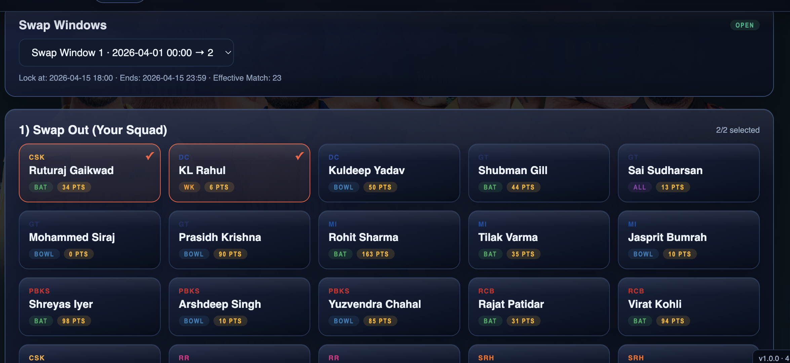
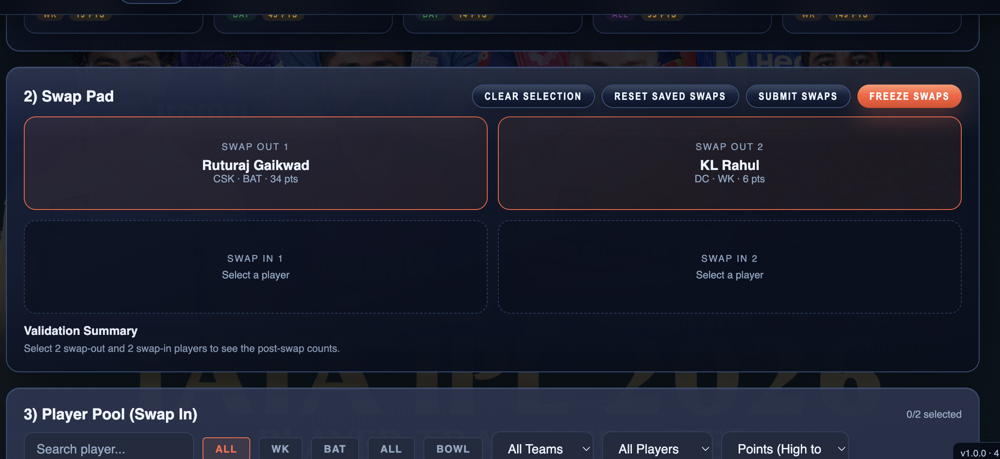
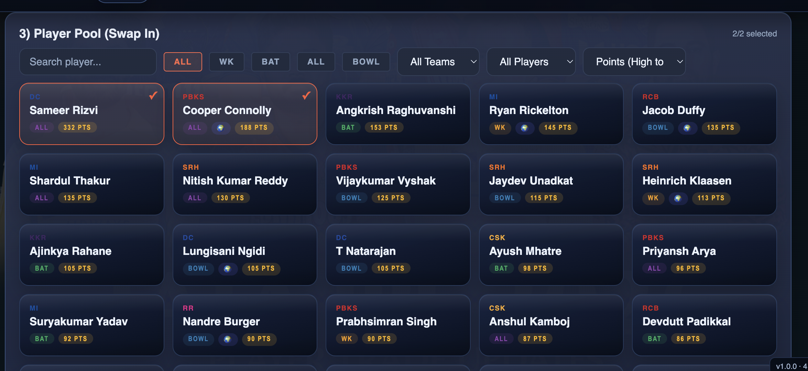
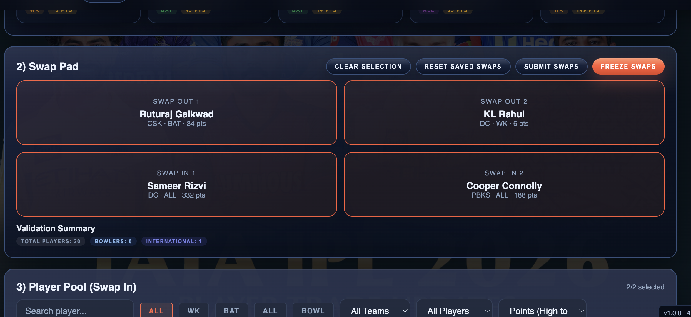

1) Playoffs Prediction
Step-by-step Pick 4 teams before the window closes.
- Go to the Playoffs Prediction tab.
- Check the window status and time range at the top of the page.
- Click four teams to select them (counter shows 4/4).
- If you need to change, use Reset Picks.
- Click Save Picks to store your prediction.
Window is shown on the page (current: 2 Apr 2026 → 10 Apr 2026).
2) Super Swapper
Step-by-step Swap 1 to 3 players during an open swap window.
- Open Super Swapper and select an active Swap Window.
- In Swap Out, click 1 to 3 players from your current team. The Swap Out list also shows each player’s accumulated points.
Screenshot 10 · Swap Out from current team

- Review the Swap Pad (before swap-in) to confirm selected swap-out players.
Screenshot 11 · Swap Pad before swap-in

- In Swap In, click the same number of players from the pool.
- The player pool can be sorted by accumulated points (highest → lowest or lowest → highest).
Screenshot 12 · Swap In from player pool

- Review the Swap Pad after both selections and check the Validation Summary (total players, bowlers, international).
- Click Submit Swaps to save.
- Click Freeze Swaps to lock the swap for the window.
- Use Reset Saved Swaps only if you need to discard the current submission.
Frozen swaps cannot be changed unless reset.
Screenshot 13 · Final swap pad + validation summary
